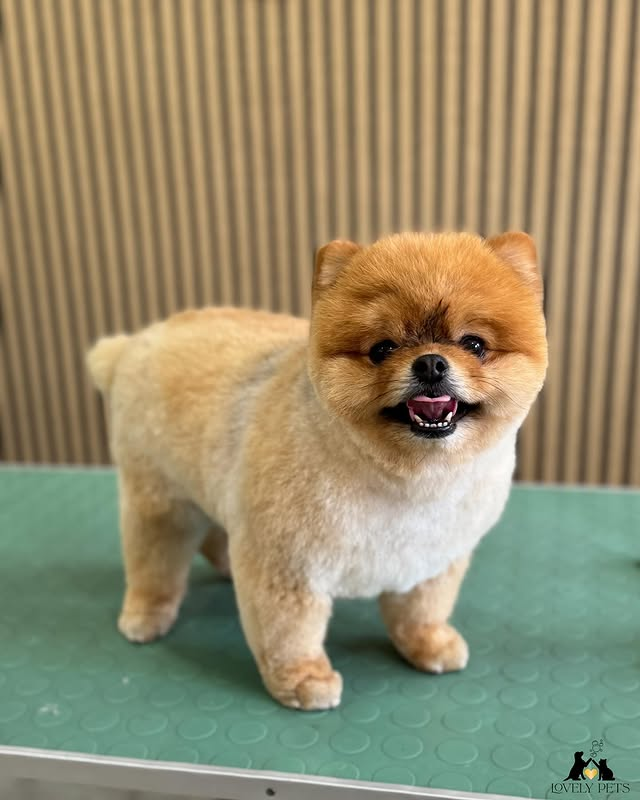

O salonu Lovely Pets
Upoznajte tim koji stoji iza najlepših transformacija u Kruševcu.

Ljubav prema životinjama je naš pokretač
Salon Lovely Pets otvoren je 2019. godine sa jednom misijom – pružiti svakom ljubimcu tretman dostojan profesionalnog salona, a svakom vlasniku mir uma da je njihov četvoronožni prijatelj u najboljim rukama.
Smestili smo se u Kruševcu, u ulici Pećka 76, gde nas svakodnevno posjećuju psi i mačke svih rasa i veličina. Naš salon je osmišljen tako da bude mirno, prijatno i sigurno okruženje – bez stresa za ljubimce, bez brige za vlasnike.
Koristimo isključivo profesionalnu kozmetiku sertifikovanu za upotrebu na životinjama – šampone, balzame i sprejeve koji neguju dlaku, kožu i čula vašeg ljubimca, a ne narušavaju njihov prirodni zaštitni sloj.
Naši sertifikati i obuke
Kontinuirano se usavršavamo jer naši ljubimci to zaslužuju.
Sertifikat grumera
Osnovna i napredna obuka za negu i šišanje pasa i mačaka svih rasa
2019Nega posebnih rasa
Specijalistički kurs za negu španijela, pudlica, maltezera i nordijskih rasa
2021Kozmetika za životinje
Stručna obuka o sastavu, primeni i bezbednosti preparata za negu kućnih ljubimaca 2022
Upoznajte nas
Jelena Petrović
Vlasnik · Glavni grumer
Sa više od 5 godina iskustva u nezi pasa i mačaka, Jelena vodi salon sa strašću i posvećenošću. Specijalista za šišanje pudlica i španijela.
Milica Đorđević
Grumer · Specijalista za mačke
Milica je naš ekspert za rad sa mačkama. Sa neizmjernom nežnošću i strpljenjem, svaka mačka osjeća se sigurno u njenim rukama.
Kako smo rasli
2019. godina
Osnivanje salona
Lovely Pets otvara vrata u Kruševcu sa jednom stolom, velikom ljubavlju i ambicijom da postane omiljeni salon u gradu.
2020. godina
Prva 100 zadovoljnih klijenata
Zahvaljujući preporukama i posvećenom radu, dostigli smo prvu veliku prekretnicu.
2021. godina
Proširenje tima i usluga
Pridružuje se Milica, specijalista za mačke. Uvode se furminiranje i spa tretmani.
2024. godina
500+ zadovoljnih klijenata
Danas smo ponos Kruševca – sa stalnom bazom klijenata i odličnim recenzijama koji govore više od bilo kog opisa.